EEPAS Italy Results: Visualization and PyCSEP Evaluation#
📚 Overview#
This notebook demonstrates the complete evaluation pipeline for EEPAS forecasts using the PyCSEP (Collaboratory for the Study of Earthquake Predictability) framework.
What This Notebook Does#
Load EEPAS and PPE Forecasts
Visualize Forecast Maps: Plot spatial distribution of seismicity rates with observed earthquakes
Run PyCSEP Consistency Tests: Evaluate forecast performance using standardized tests
Compare Models: Quantitatively compare EEPAS vs. PPE using multiple scoring metrics
🎯 EEPAS Workflow Context#
This notebook represents Step 5 (Evaluation) in the EEPAS pipeline:
[Step 1] PPE Learning → a, d, s
[Step 2] Aftershock Fitting → ν, κ
[Step 3] EEPAS Learning → am, bm, Sm, at, bt, St, ba, Sa, u
[Step 4] Forecast Generation → PREVISIONI_3m_EEPAS_*.mat, PREVISIONI_3m_PPE_*.mat
[Step 5] Evaluation (this notebook) → PyCSEP tests + visualization
📊 Configuration and Data#
Input Files (from results_italy_causal_ew0/)#
File |
Description |
Usage |
|---|---|---|
|
EEPAS forecast (2012-2022) |
Main forecast to evaluate |
|
PPE forecast (2012-2022) |
Baseline model for comparison |
|
Learned EEPAS parameters |
Reference for interpretation |
|
Learned PPE parameters |
Reference for interpretation |
Catalog Files#
HORUS_Italy_filtered.mat: Observed earthquakes in testing region (177 cells)
CELLE_ter.mat: Grid cell definitions (177 cells, ~42.43 km × 42.43 km each)
CPTI15.mat: Italian polygon boundary (for spatial filtering)
Key Parameters#
{
"forecastStartYear": 2012,
"forecastEndYear": 2022,
"forecastPeriodDays": 91.31, // 3-month periods
"modelParams": {
"mT": 5.0, // Target magnitude threshold
"m0": 2.45 // Completeness magnitude
}
}
Result:
40 forecast periods (10 years ÷ 3 months ≈ 40 periods)
Magnitude bins: M ≥ 5.0 in 0.1 increments (25 bins total)
Spatial bins: 177 grid cells
Total space-magnitude bins: 177 × 25 = 4,425 bins
📝 Notebook Structure#
Data Loading: Load forecasts, grid definitions, and catalog
Forecast Visualization: Plot spatial maps with observed earthquakes
EEPAS Evaluation: Run all PyCSEP tests on EEPAS forecast
PPE Evaluation: Run all PyCSEP tests on PPE forecast
Model Comparison: Compare performance using multiple metrics
⚠️ Important Notes#
Coordinate Transformations:
Forecasts are in RDN2008 (EPSG:7794) projection
PyCSEP requires WGS84 (lat/lon)
We perform coordinate transformation for each grid cell
Magnitude Threshold:
Forecasts use M ≥ 5.0 (mT in config)
Catalog filtering must match:
magnitude >= 4.95(to include M 5.0-5.05 bin)
Time Period:
Forecast: 2012-01-01 to 2021-12-31
Actual evaluation: 2012-01-25 to 2018-12-26 (based on available catalog)
PyCSEP Patch:
We patch
csep/core/regions.pyto fix polygon boundary handlingSee
patch_pycsep.pyfor details
Let’s begin!
[1]:
!pip install pycsep -qq
━━━━━━━━━━━━━━━━━━━━━━━━━━━━━━━━━━━━━━━━ 24.3/24.3 MB 8.2 MB/s eta 0:00:00
Preparing metadata (setup.py) ... done
━━━━━━━━━━━━━━━━━━━━━━━━━━━━━━━━━━━━━━━━ 11.8/11.8 MB 121.0 MB/s eta 0:00:00
━━━━━━━━━━━━━━━━━━━━━━━━━━━━━━━━━━━━━━━━ 14.5/14.5 MB 43.2 MB/s eta 0:00:00
━━━━━━━━━━━━━━━━━━━━━━━━━━━━━━━━━━━━━━━━ 1.6/1.6 MB 63.0 MB/s eta 0:00:00
Building wheel for pycsep (setup.py) ... done
ERROR: pip's dependency resolver does not currently take into account all the packages that are installed. This behaviour is the source of the following dependency conflicts.
google-adk 1.20.0 requires sqlalchemy<3.0.0,>=2.0, but you have sqlalchemy 1.4.54 which is incompatible.
ipython-sql 0.5.0 requires sqlalchemy>=2.0, but you have sqlalchemy 1.4.54 which is incompatible.
[2]:
from google.colab import drive
drive.mount('/content/drive')
Mounted at /content/drive
[3]:
!cp /content/drive/MyDrive/00_Image\ meeting/Researches/01_Scratchpad/earthquake/HORUS_Italy_polygon_filtered.mat /content/
!cp /content/drive/MyDrive/00_Image\ meeting/Researches/01_Scratchpad/earthquake/HORUS_Italy_RDN2008_polygon_filtered.mat /content/
!cp /content/drive/MyDrive/00_Image\ meeting/Researches/01_Scratchpad/earthquake/HORUS_Italy_filtered.mat /content/
!cp /content/drive/MyDrive/00_Image\ meeting/Researches/01_Scratchpad/earthquake/HORUS_Italy_RDN2008_filtered.mat /content/
!cp /content/drive/MyDrive/00_Image\ meeting/Researches/01_Scratchpad/earthquake/EEPAS_CODE/CELLE_ter.mat /content/
!cp /content/drive/MyDrive/00_Image\ meeting/Researches/01_Scratchpad/earthquake/EEPAS_CODE/CPTI15.mat /content/
!cp /content/drive/MyDrive/00_Image\ meeting/Researches/01_Scratchpad/earthquake/EEPAS-master/analysis/forecast_converter.py /content/
!cp /content/drive/MyDrive/00_Image\ meeting/Researches/01_Scratchpad/earthquake/EEPAS-master/analysis/patch_pycsep.py /content/
[4]:
!cp /content/drive/MyDrive/results_italy_target_m0.zip /content/
!unzip /content/results_italy_target_m0.zip
Archive: /content/results_italy_target_m0.zip
creating: results_italy_target_m0/
inflating: results_italy_target_m0/config_used.json
inflating: results_italy_target_m0/execution.log
inflating: results_italy_target_m0/execution_info.txt
inflating: results_italy_target_m0/Fitted_par_aftershock_1990_2012.csv
inflating: results_italy_target_m0/Fitted_par_EEPAS_1990_2012.csv
inflating: results_italy_target_m0/Fitted_par_PPE_1990_2012.csv
inflating: results_italy_target_m0/PREVISIONI_3m_EEPAS_2012_2022.mat
inflating: results_italy_target_m0/PREVISIONI_3m_PPE_2012_2022.mat
inflating: results_italy_target_m0/README_REPRODUCE.md
[5]:
!python patch_pycsep.py
Checking file: /usr/local/lib/python3.12/dist-packages/csep/core/regions.py
✅ Success: Code has been automatically replaced.
🎯 Workflow#
[Step 1] Load EEPAS/PPE forecasts using EEPASForecastConverter
[Step 2] Convert to PyCSEP GriddedForecast objects
[Step 3] Load and filter earthquake catalog
[Step 4] Run PyCSEP consistency tests
[Step 5] Compare EEPAS vs. PPE
1. Setup and Imports#
[6]:
import sys
import os
import numpy as np
import pandas as pd
import scipy.io
from datetime import datetime, timezone
import matplotlib.pyplot as plt
import cartopy.crs as ccrs
from cartopy.mpl.gridliner import LONGITUDE_FORMATTER, LATITUDE_FORMATTER
import csep
from csep.utils import time_utils
from csep.core import poisson_evaluations as poisson
from csep.core import binomial_evaluations as binomial
from csep.utils import plots
from csep.utils.stats import get_Kagan_I1_score
# Add parent directory to path
sys.path.insert(0, os.path.abspath('..'))
from forecast_converter import EEPASForecastConverter
print("✅ All imports successful!")
✅ All imports successful!
2. Initialize Forecast Converters#
[7]:
# File paths
eepas_file = '/content/results_italy_target_m0/PREVISIONI_3m_EEPAS_2012_2022.mat'
ppe_file = '/content/results_italy_target_m0/PREVISIONI_3m_PPE_2012_2022.mat'
grid_file = 'CELLE_ter.mat'
# Initialize converters
print("Initializing EEPAS converter...")
eepas_converter = EEPASForecastConverter(
forecast_file=eepas_file,
grid_file=grid_file,
num_regions=177,
num_magnitude_steps=25,
magnitude_min=5.0,
magnitude_step=0.1,
coordinate_transform=True, # RDN2008 → WGS84
source_crs='EPSG:7794',
target_crs='EPSG:4326',
verbose=True
)
print("\nInitializing PPE converter...")
ppe_converter = EEPASForecastConverter(
forecast_file=ppe_file,
grid_file=grid_file,
num_regions=177,
num_magnitude_steps=25,
magnitude_min=5.0,
magnitude_step=0.1,
coordinate_transform=True,
source_crs='EPSG:7794',
target_crs='EPSG:4326',
verbose=True
)
print(f"\n✅ Converters initialized!")
print(f" EEPAS: {eepas_converter.num_periods} periods detected")
print(f" PPE: {ppe_converter.num_periods} periods detected")
Initializing EEPAS converter...
Loading forecast file: /content/results_italy_target_m0/PREVISIONI_3m_EEPAS_2012_2022.mat
Variable name: PREVISIONI_3m_less
Data shape: (1000, 178)
Detected 40 time periods
Loading grid definition: CELLE_ter.mat
Performing coordinate transformation...
Converting grids: 100%|██████████| 177/177 [00:00<00:00, 9288.14it/s]
Successfully loaded 177 grids
Magnitude range: M5.0 - M7.5
Total 25 magnitude bins
Initializing PPE converter...
Loading forecast file: /content/results_italy_target_m0/PREVISIONI_3m_PPE_2012_2022.mat
Variable name: PREVISIONI_3m
Data shape: (1000, 178)
Detected 40 time periods
Loading grid definition: CELLE_ter.mat
Performing coordinate transformation...
Converting grids: 100%|██████████| 177/177 [00:00<00:00, 10173.51it/s]
Successfully loaded 177 grids
Magnitude range: M5.0 - M7.5
Total 25 magnitude bins
✅ Converters initialized!
EEPAS: 40 periods detected
PPE: 40 periods detected
3. Convert All Periods and Export#
[8]:
# Convert EEPAS forecast (all periods summed)
print("Converting EEPAS forecast (40 periods)...")
eepas_data = eepas_converter.convert_all_periods(
output_file='eepas_forecast_all.dat',
perform_downsampling=True,
grid_resolution=0.1
)
print(f"\n✅ EEPAS conversion complete!")
print(f" Total grid points: {len(eepas_data)}")
print(f" Total rate: {eepas_data['RATE'].sum():.6f}")
print(f" Spatial extent: Lon [{eepas_data['LON_0'].min():.2f}, {eepas_data['LON_1'].max():.2f}]")
print(f" Lat [{eepas_data['LAT_0'].min():.2f}, {eepas_data['LAT_1'].max():.2f}]")
Converting EEPAS forecast (40 periods)...
======================================================================
Converting All Periods (1 - 40)
======================================================================
Processing period 1/40...
Performing spatial downsampling (→ 0.1° × 0.1°)
Processing sub-grids: 100%|██████████| 4425/4425 [00:03<00:00, 1433.19it/s]
Original: 4425 coarse grids → Downsampled: 92100 0.1° grids
Processing period 2/40...
Performing spatial downsampling (→ 0.1° × 0.1°)
Processing sub-grids: 100%|██████████| 4425/4425 [00:02<00:00, 1727.17it/s]
Original: 4425 coarse grids → Downsampled: 92100 0.1° grids
Processing period 3/40...
Performing spatial downsampling (→ 0.1° × 0.1°)
Processing sub-grids: 100%|██████████| 4425/4425 [00:02<00:00, 1746.28it/s]
Original: 4425 coarse grids → Downsampled: 92100 0.1° grids
Processing period 4/40...
Performing spatial downsampling (→ 0.1° × 0.1°)
Processing sub-grids: 100%|██████████| 4425/4425 [00:03<00:00, 1333.51it/s]
Original: 4425 coarse grids → Downsampled: 92100 0.1° grids
Processing period 5/40...
Performing spatial downsampling (→ 0.1° × 0.1°)
Processing sub-grids: 100%|██████████| 4425/4425 [00:03<00:00, 1330.45it/s]
Original: 4425 coarse grids → Downsampled: 92100 0.1° grids
Processing period 6/40...
Performing spatial downsampling (→ 0.1° × 0.1°)
Processing sub-grids: 100%|██████████| 4425/4425 [00:02<00:00, 1688.08it/s]
Original: 4425 coarse grids → Downsampled: 92100 0.1° grids
Processing period 7/40...
Performing spatial downsampling (→ 0.1° × 0.1°)
Processing sub-grids: 100%|██████████| 4425/4425 [00:02<00:00, 1685.99it/s]
Original: 4425 coarse grids → Downsampled: 92100 0.1° grids
Processing period 8/40...
Performing spatial downsampling (→ 0.1° × 0.1°)
Processing sub-grids: 100%|██████████| 4425/4425 [00:03<00:00, 1304.03it/s]
Original: 4425 coarse grids → Downsampled: 92100 0.1° grids
Processing period 9/40...
Performing spatial downsampling (→ 0.1° × 0.1°)
Processing sub-grids: 100%|██████████| 4425/4425 [00:03<00:00, 1345.09it/s]
Original: 4425 coarse grids → Downsampled: 92100 0.1° grids
Processing period 10/40...
Performing spatial downsampling (→ 0.1° × 0.1°)
Processing sub-grids: 100%|██████████| 4425/4425 [00:02<00:00, 1646.94it/s]
Original: 4425 coarse grids → Downsampled: 92100 0.1° grids
Processing period 11/40...
Performing spatial downsampling (→ 0.1° × 0.1°)
Processing sub-grids: 100%|██████████| 4425/4425 [00:03<00:00, 1439.97it/s]
Original: 4425 coarse grids → Downsampled: 92100 0.1° grids
Processing period 12/40...
Performing spatial downsampling (→ 0.1° × 0.1°)
Processing sub-grids: 100%|██████████| 4425/4425 [00:04<00:00, 922.16it/s]
Original: 4425 coarse grids → Downsampled: 92100 0.1° grids
Processing period 13/40...
Performing spatial downsampling (→ 0.1° × 0.1°)
Processing sub-grids: 100%|██████████| 4425/4425 [00:02<00:00, 1671.68it/s]
Original: 4425 coarse grids → Downsampled: 92100 0.1° grids
Processing period 14/40...
Performing spatial downsampling (→ 0.1° × 0.1°)
Processing sub-grids: 100%|██████████| 4425/4425 [00:02<00:00, 1671.63it/s]
Original: 4425 coarse grids → Downsampled: 92100 0.1° grids
Processing period 15/40...
Performing spatial downsampling (→ 0.1° × 0.1°)
Processing sub-grids: 100%|██████████| 4425/4425 [00:02<00:00, 1655.41it/s]
Original: 4425 coarse grids → Downsampled: 92100 0.1° grids
Processing period 16/40...
Performing spatial downsampling (→ 0.1° × 0.1°)
Processing sub-grids: 100%|██████████| 4425/4425 [00:03<00:00, 1143.03it/s]
Original: 4425 coarse grids → Downsampled: 92100 0.1° grids
Processing period 17/40...
Performing spatial downsampling (→ 0.1° × 0.1°)
Processing sub-grids: 100%|██████████| 4425/4425 [00:02<00:00, 1530.45it/s]
Original: 4425 coarse grids → Downsampled: 92100 0.1° grids
Processing period 18/40...
Performing spatial downsampling (→ 0.1° × 0.1°)
Processing sub-grids: 100%|██████████| 4425/4425 [00:02<00:00, 1684.58it/s]
Original: 4425 coarse grids → Downsampled: 92100 0.1° grids
Processing period 19/40...
Performing spatial downsampling (→ 0.1° × 0.1°)
Processing sub-grids: 100%|██████████| 4425/4425 [00:02<00:00, 1727.04it/s]
Original: 4425 coarse grids → Downsampled: 92100 0.1° grids
Processing period 20/40...
Performing spatial downsampling (→ 0.1° × 0.1°)
Processing sub-grids: 100%|██████████| 4425/4425 [00:03<00:00, 1194.57it/s]
Original: 4425 coarse grids → Downsampled: 92100 0.1° grids
Processing period 21/40...
Performing spatial downsampling (→ 0.1° × 0.1°)
Processing sub-grids: 100%|██████████| 4425/4425 [00:02<00:00, 1490.79it/s]
Original: 4425 coarse grids → Downsampled: 92100 0.1° grids
Processing period 22/40...
Performing spatial downsampling (→ 0.1° × 0.1°)
Processing sub-grids: 100%|██████████| 4425/4425 [00:02<00:00, 1665.86it/s]
Original: 4425 coarse grids → Downsampled: 92100 0.1° grids
Processing period 23/40...
Performing spatial downsampling (→ 0.1° × 0.1°)
Processing sub-grids: 100%|██████████| 4425/4425 [00:02<00:00, 1669.12it/s]
Original: 4425 coarse grids → Downsampled: 92100 0.1° grids
Processing period 24/40...
Performing spatial downsampling (→ 0.1° × 0.1°)
Processing sub-grids: 100%|██████████| 4425/4425 [00:03<00:00, 1256.94it/s]
Original: 4425 coarse grids → Downsampled: 92100 0.1° grids
Processing period 25/40...
Performing spatial downsampling (→ 0.1° × 0.1°)
Processing sub-grids: 100%|██████████| 4425/4425 [00:03<00:00, 1384.28it/s]
Original: 4425 coarse grids → Downsampled: 92100 0.1° grids
Processing period 26/40...
Performing spatial downsampling (→ 0.1° × 0.1°)
Processing sub-grids: 100%|██████████| 4425/4425 [00:02<00:00, 1650.39it/s]
Original: 4425 coarse grids → Downsampled: 92100 0.1° grids
Processing period 27/40...
Performing spatial downsampling (→ 0.1° × 0.1°)
Processing sub-grids: 100%|██████████| 4425/4425 [00:02<00:00, 1713.98it/s]
Original: 4425 coarse grids → Downsampled: 92100 0.1° grids
Processing period 28/40...
Performing spatial downsampling (→ 0.1° × 0.1°)
Processing sub-grids: 100%|██████████| 4425/4425 [00:03<00:00, 1319.12it/s]
Original: 4425 coarse grids → Downsampled: 92100 0.1° grids
Processing period 29/40...
Performing spatial downsampling (→ 0.1° × 0.1°)
Processing sub-grids: 100%|██████████| 4425/4425 [00:03<00:00, 1342.83it/s]
Original: 4425 coarse grids → Downsampled: 92100 0.1° grids
Processing period 30/40...
Performing spatial downsampling (→ 0.1° × 0.1°)
Processing sub-grids: 100%|██████████| 4425/4425 [00:02<00:00, 1739.43it/s]
Original: 4425 coarse grids → Downsampled: 92100 0.1° grids
Processing period 31/40...
Performing spatial downsampling (→ 0.1° × 0.1°)
Processing sub-grids: 100%|██████████| 4425/4425 [00:02<00:00, 1638.98it/s]
Original: 4425 coarse grids → Downsampled: 92100 0.1° grids
Processing period 32/40...
Performing spatial downsampling (→ 0.1° × 0.1°)
Processing sub-grids: 100%|██████████| 4425/4425 [00:03<00:00, 1330.68it/s]
Original: 4425 coarse grids → Downsampled: 92100 0.1° grids
Processing period 33/40...
Performing spatial downsampling (→ 0.1° × 0.1°)
Processing sub-grids: 100%|██████████| 4425/4425 [00:03<00:00, 1273.91it/s]
Original: 4425 coarse grids → Downsampled: 92100 0.1° grids
Processing period 34/40...
Performing spatial downsampling (→ 0.1° × 0.1°)
Processing sub-grids: 100%|██████████| 4425/4425 [00:02<00:00, 1636.85it/s]
Original: 4425 coarse grids → Downsampled: 92100 0.1° grids
Processing period 35/40...
Performing spatial downsampling (→ 0.1° × 0.1°)
Processing sub-grids: 100%|██████████| 4425/4425 [00:02<00:00, 1646.84it/s]
Original: 4425 coarse grids → Downsampled: 92100 0.1° grids
Processing period 36/40...
Performing spatial downsampling (→ 0.1° × 0.1°)
Processing sub-grids: 100%|██████████| 4425/4425 [00:03<00:00, 1324.75it/s]
Original: 4425 coarse grids → Downsampled: 92100 0.1° grids
Processing period 37/40...
Performing spatial downsampling (→ 0.1° × 0.1°)
Processing sub-grids: 100%|██████████| 4425/4425 [00:03<00:00, 1289.86it/s]
Original: 4425 coarse grids → Downsampled: 92100 0.1° grids
Processing period 38/40...
Performing spatial downsampling (→ 0.1° × 0.1°)
Processing sub-grids: 100%|██████████| 4425/4425 [00:02<00:00, 1748.93it/s]
Original: 4425 coarse grids → Downsampled: 92100 0.1° grids
Processing period 39/40...
Performing spatial downsampling (→ 0.1° × 0.1°)
Processing sub-grids: 100%|██████████| 4425/4425 [00:02<00:00, 1653.29it/s]
Original: 4425 coarse grids → Downsampled: 92100 0.1° grids
Processing period 40/40...
Performing spatial downsampling (→ 0.1° × 0.1°)
Processing sub-grids: 100%|██████████| 4425/4425 [00:03<00:00, 1409.16it/s]
Original: 4425 coarse grids → Downsampled: 92100 0.1° grids
Combining all periods...
Summing forecast rates across periods...
Before merge: 3684000 grid points
After summing: 88500 unique grid points
Exporting PyCSEP format: eepas_forecast_all.dat
Successfully exported 88500 rows
All periods conversion complete!
✅ EEPAS conversion complete!
Total grid points: 88500
Total rate: 10.874104
Spatial extent: Lon [6.50, 18.40]
Lat [36.60, 47.00]
[9]:
# Convert PPE forecast (all periods summed)
print("Converting PPE forecast (40 periods)...")
ppe_data = ppe_converter.convert_all_periods(
output_file='ppe_forecast_all.dat',
perform_downsampling=True,
grid_resolution=0.1
)
print(f"\n✅ PPE conversion complete!")
print(f" Total grid points: {len(ppe_data)}")
print(f" Total rate: {ppe_data['RATE'].sum():.6f}")
Converting PPE forecast (40 periods)...
======================================================================
Converting All Periods (1 - 40)
======================================================================
Processing period 1/40...
Performing spatial downsampling (→ 0.1° × 0.1°)
Processing sub-grids: 100%|██████████| 4425/4425 [00:02<00:00, 1636.99it/s]
Original: 4425 coarse grids → Downsampled: 92100 0.1° grids
Processing period 2/40...
Performing spatial downsampling (→ 0.1° × 0.1°)
Processing sub-grids: 100%|██████████| 4425/4425 [00:02<00:00, 1618.66it/s]
Original: 4425 coarse grids → Downsampled: 92100 0.1° grids
Processing period 3/40...
Performing spatial downsampling (→ 0.1° × 0.1°)
Processing sub-grids: 100%|██████████| 4425/4425 [00:04<00:00, 1105.37it/s]
Original: 4425 coarse grids → Downsampled: 92100 0.1° grids
Processing period 4/40...
Performing spatial downsampling (→ 0.1° × 0.1°)
Processing sub-grids: 100%|██████████| 4425/4425 [00:02<00:00, 1711.13it/s]
Original: 4425 coarse grids → Downsampled: 92100 0.1° grids
Processing period 5/40...
Performing spatial downsampling (→ 0.1° × 0.1°)
Processing sub-grids: 100%|██████████| 4425/4425 [00:02<00:00, 1633.15it/s]
Original: 4425 coarse grids → Downsampled: 92100 0.1° grids
Processing period 6/40...
Performing spatial downsampling (→ 0.1° × 0.1°)
Processing sub-grids: 100%|██████████| 4425/4425 [00:02<00:00, 1681.27it/s]
Original: 4425 coarse grids → Downsampled: 92100 0.1° grids
Processing period 7/40...
Performing spatial downsampling (→ 0.1° × 0.1°)
Processing sub-grids: 100%|██████████| 4425/4425 [00:04<00:00, 1094.94it/s]
Original: 4425 coarse grids → Downsampled: 92100 0.1° grids
Processing period 8/40...
Performing spatial downsampling (→ 0.1° × 0.1°)
Processing sub-grids: 100%|██████████| 4425/4425 [00:02<00:00, 1727.77it/s]
Original: 4425 coarse grids → Downsampled: 92100 0.1° grids
Processing period 9/40...
Performing spatial downsampling (→ 0.1° × 0.1°)
Processing sub-grids: 100%|██████████| 4425/4425 [00:02<00:00, 1732.09it/s]
Original: 4425 coarse grids → Downsampled: 92100 0.1° grids
Processing period 10/40...
Performing spatial downsampling (→ 0.1° × 0.1°)
Processing sub-grids: 100%|██████████| 4425/4425 [00:02<00:00, 1640.77it/s]
Original: 4425 coarse grids → Downsampled: 92100 0.1° grids
Processing period 11/40...
Performing spatial downsampling (→ 0.1° × 0.1°)
Processing sub-grids: 100%|██████████| 4425/4425 [00:04<00:00, 1064.15it/s]
Original: 4425 coarse grids → Downsampled: 92100 0.1° grids
Processing period 12/40...
Performing spatial downsampling (→ 0.1° × 0.1°)
Processing sub-grids: 100%|██████████| 4425/4425 [00:02<00:00, 1678.79it/s]
Original: 4425 coarse grids → Downsampled: 92100 0.1° grids
Processing period 13/40...
Performing spatial downsampling (→ 0.1° × 0.1°)
Processing sub-grids: 100%|██████████| 4425/4425 [00:02<00:00, 1761.46it/s]
Original: 4425 coarse grids → Downsampled: 92100 0.1° grids
Processing period 14/40...
Performing spatial downsampling (→ 0.1° × 0.1°)
Processing sub-grids: 100%|██████████| 4425/4425 [00:02<00:00, 1642.87it/s]
Original: 4425 coarse grids → Downsampled: 92100 0.1° grids
Processing period 15/40...
Performing spatial downsampling (→ 0.1° × 0.1°)
Processing sub-grids: 100%|██████████| 4425/4425 [00:04<00:00, 1006.77it/s]
Original: 4425 coarse grids → Downsampled: 92100 0.1° grids
Processing period 16/40...
Performing spatial downsampling (→ 0.1° × 0.1°)
Processing sub-grids: 100%|██████████| 4425/4425 [00:02<00:00, 1664.26it/s]
Original: 4425 coarse grids → Downsampled: 92100 0.1° grids
Processing period 17/40...
Performing spatial downsampling (→ 0.1° × 0.1°)
Processing sub-grids: 100%|██████████| 4425/4425 [00:02<00:00, 1750.34it/s]
Original: 4425 coarse grids → Downsampled: 92100 0.1° grids
Processing period 18/40...
Performing spatial downsampling (→ 0.1° × 0.1°)
Processing sub-grids: 100%|██████████| 4425/4425 [00:02<00:00, 1722.34it/s]
Original: 4425 coarse grids → Downsampled: 92100 0.1° grids
Processing period 19/40...
Performing spatial downsampling (→ 0.1° × 0.1°)
Processing sub-grids: 100%|██████████| 4425/4425 [00:04<00:00, 984.07it/s]
Original: 4425 coarse grids → Downsampled: 92100 0.1° grids
Processing period 20/40...
Performing spatial downsampling (→ 0.1° × 0.1°)
Processing sub-grids: 100%|██████████| 4425/4425 [00:02<00:00, 1650.46it/s]
Original: 4425 coarse grids → Downsampled: 92100 0.1° grids
Processing period 21/40...
Performing spatial downsampling (→ 0.1° × 0.1°)
Processing sub-grids: 100%|██████████| 4425/4425 [00:02<00:00, 1776.99it/s]
Original: 4425 coarse grids → Downsampled: 92100 0.1° grids
Processing period 22/40...
Performing spatial downsampling (→ 0.1° × 0.1°)
Processing sub-grids: 100%|██████████| 4425/4425 [00:02<00:00, 1700.49it/s]
Original: 4425 coarse grids → Downsampled: 92100 0.1° grids
Processing period 23/40...
Performing spatial downsampling (→ 0.1° × 0.1°)
Processing sub-grids: 100%|██████████| 4425/4425 [00:04<00:00, 955.82it/s]
Original: 4425 coarse grids → Downsampled: 92100 0.1° grids
Processing period 24/40...
Performing spatial downsampling (→ 0.1° × 0.1°)
Processing sub-grids: 100%|██████████| 4425/4425 [00:03<00:00, 1157.20it/s]
Original: 4425 coarse grids → Downsampled: 92100 0.1° grids
Processing period 25/40...
Performing spatial downsampling (→ 0.1° × 0.1°)
Processing sub-grids: 100%|██████████| 4425/4425 [00:02<00:00, 1647.01it/s]
Original: 4425 coarse grids → Downsampled: 92100 0.1° grids
Processing period 26/40...
Performing spatial downsampling (→ 0.1° × 0.1°)
Processing sub-grids: 100%|██████████| 4425/4425 [00:02<00:00, 1713.58it/s]
Original: 4425 coarse grids → Downsampled: 92100 0.1° grids
Processing period 27/40...
Performing spatial downsampling (→ 0.1° × 0.1°)
Processing sub-grids: 100%|██████████| 4425/4425 [00:03<00:00, 1118.36it/s]
Original: 4425 coarse grids → Downsampled: 92100 0.1° grids
Processing period 28/40...
Performing spatial downsampling (→ 0.1° × 0.1°)
Processing sub-grids: 100%|██████████| 4425/4425 [00:02<00:00, 1568.82it/s]
Original: 4425 coarse grids → Downsampled: 92100 0.1° grids
Processing period 29/40...
Performing spatial downsampling (→ 0.1° × 0.1°)
Processing sub-grids: 100%|██████████| 4425/4425 [00:02<00:00, 1768.52it/s]
Original: 4425 coarse grids → Downsampled: 92100 0.1° grids
Processing period 30/40...
Performing spatial downsampling (→ 0.1° × 0.1°)
Processing sub-grids: 100%|██████████| 4425/4425 [00:02<00:00, 1643.90it/s]
Original: 4425 coarse grids → Downsampled: 92100 0.1° grids
Processing period 31/40...
Performing spatial downsampling (→ 0.1° × 0.1°)
Processing sub-grids: 100%|██████████| 4425/4425 [00:03<00:00, 1178.64it/s]
Original: 4425 coarse grids → Downsampled: 92100 0.1° grids
Processing period 32/40...
Performing spatial downsampling (→ 0.1° × 0.1°)
Processing sub-grids: 100%|██████████| 4425/4425 [00:03<00:00, 1431.24it/s]
Original: 4425 coarse grids → Downsampled: 92100 0.1° grids
Processing period 33/40...
Performing spatial downsampling (→ 0.1° × 0.1°)
Processing sub-grids: 100%|██████████| 4425/4425 [00:02<00:00, 1622.54it/s]
Original: 4425 coarse grids → Downsampled: 92100 0.1° grids
Processing period 34/40...
Performing spatial downsampling (→ 0.1° × 0.1°)
Processing sub-grids: 100%|██████████| 4425/4425 [00:02<00:00, 1686.82it/s]
Original: 4425 coarse grids → Downsampled: 92100 0.1° grids
Processing period 35/40...
Performing spatial downsampling (→ 0.1° × 0.1°)
Processing sub-grids: 100%|██████████| 4425/4425 [00:03<00:00, 1229.35it/s]
Original: 4425 coarse grids → Downsampled: 92100 0.1° grids
Processing period 36/40...
Performing spatial downsampling (→ 0.1° × 0.1°)
Processing sub-grids: 100%|██████████| 4425/4425 [00:02<00:00, 1556.50it/s]
Original: 4425 coarse grids → Downsampled: 92100 0.1° grids
Processing period 37/40...
Performing spatial downsampling (→ 0.1° × 0.1°)
Processing sub-grids: 100%|██████████| 4425/4425 [00:02<00:00, 1634.14it/s]
Original: 4425 coarse grids → Downsampled: 92100 0.1° grids
Processing period 38/40...
Performing spatial downsampling (→ 0.1° × 0.1°)
Processing sub-grids: 100%|██████████| 4425/4425 [00:02<00:00, 1618.25it/s]
Original: 4425 coarse grids → Downsampled: 92100 0.1° grids
Processing period 39/40...
Performing spatial downsampling (→ 0.1° × 0.1°)
Processing sub-grids: 100%|██████████| 4425/4425 [00:03<00:00, 1216.95it/s]
Original: 4425 coarse grids → Downsampled: 92100 0.1° grids
Processing period 40/40...
Performing spatial downsampling (→ 0.1° × 0.1°)
Processing sub-grids: 100%|██████████| 4425/4425 [00:03<00:00, 1399.62it/s]
Original: 4425 coarse grids → Downsampled: 92100 0.1° grids
Combining all periods...
Summing forecast rates across periods...
Before merge: 3684000 grid points
After summing: 88500 unique grid points
Exporting PyCSEP format: ppe_forecast_all.dat
Successfully exported 88500 rows
All periods conversion complete!
✅ PPE conversion complete!
Total grid points: 88500
Total rate: 13.999580
4. Create PyCSEP Forecast Objects#
[10]:
# Define time range
start_date = time_utils.strptime_to_utc_datetime('2012-01-01 00:00:00.0')
end_date = time_utils.strptime_to_utc_datetime('2021-12-31 23:59:59.0')
# Create PyCSEP forecasts
print("Creating PyCSEP forecast objects...")
eepas_forecast = eepas_converter.to_pycsep_forecast(
data=eepas_data,
start_date=start_date,
end_date=end_date,
name='EEPAS_2012_2021'
)
ppe_forecast = ppe_converter.to_pycsep_forecast(
data=ppe_data,
start_date=start_date,
end_date=end_date,
name='PPE_2012_2021'
)
print(f"\n✅ PyCSEP forecasts created!")
print(f" EEPAS: {eepas_forecast.event_count:.2f} expected events")
print(f" PPE: {ppe_forecast.event_count:.2f} expected events")
Creating PyCSEP forecast objects...
Exporting PyCSEP format: /tmp/tmp77duzefx.dat
Successfully exported 88500 rows
Exporting PyCSEP format: /tmp/tmp90dcv9g6.dat
Successfully exported 88500 rows
✅ PyCSEP forecasts created!
EEPAS: 10.87 expected events
PPE: 14.00 expected events
5. Load and Filter Catalog#
Load observed earthquakes from HORUS catalog
[11]:
# Custom loader for HORUS format
def load_horus_catalog(filename):
"""Load HORUS catalog and convert to PyCSEP format"""
mat_data = scipy.io.loadmat(filename)
horus_data = mat_data['HORUS']
eventlist = []
for i, event in enumerate(horus_data):
try:
year, month, day = int(event[0]), int(event[1]), int(event[2])
hour, minute = int(event[3]), int(event[4])
second_float = float(event[5])
second = int(second_float)
microsecond = int((second_float - second) * 1000000)
latitude, longitude = float(event[6]), float(event[7])
depth, magnitude = float(event[8]), round(float(event[9]), 1)
dt = datetime(year, month, day, hour, minute, second, microsecond, tzinfo=timezone.utc)
origin_time = time_utils.datetime_to_utc_epoch(dt)
event_id = f'HORUS-{i+1:06d}'
eventlist.append((event_id, origin_time, latitude, longitude, depth, magnitude))
except:
continue
return eventlist
# Load catalog
print("Loading earthquake catalog...")
catalog = csep.load_catalog('HORUS_Italy_filtered.mat', loader=load_horus_catalog)
# Filter catalog
catalog = catalog.filter('magnitude >= 4.95') # Include M5.0-5.05 bin
catalog = catalog.filter('depth <= 40') # Match forecast depth range
# Filter to forecast time range
start_epoch = time_utils.datetime_to_utc_epoch(start_date)
end_epoch = time_utils.datetime_to_utc_epoch(end_date)
catalog = catalog.filter([f'origin_time >= {start_epoch}', f'origin_time < {end_epoch}'])
# Filter to forecast spatial region
catalog = catalog.filter_spatial(eepas_forecast.region)
print(f"\n✅ Catalog loaded and filtered")
print(catalog)
Loading earthquake catalog...
✅ Catalog loaded and filtered
Name: None
Start Date: 2012-01-25 08:06:37.090000+00:00
End Date: 2018-12-26 02:19:14+00:00
Latitude: (37.644, 44.8955)
Longitude: (10.1357, 16.0158)
Min Mw: 5.0
Max Mw: 6.6
Event Count: 25
6. Visualize Forecasts#
[12]:
# Plot EEPAS forecast
fig, axes = plt.subplots(1, 2, figsize=(16, 6), subplot_kw={'projection': ccrs.Mercator()})
# EEPAS
ax1 = eepas_forecast.plot(
ax=axes[0],
extent=[6, 19, 35, 48],
log=False,
plot_args={'title': 'EEPAS Forecast (2012-2021)', 'cmap': 'rainbow'}
)
# PPE
ax2 = ppe_forecast.plot(
ax=axes[1],
extent=[6, 19, 35, 48],
log=False,
plot_args={'title': 'PPE Forecast (2012-2021)', 'cmap': 'rainbow'}
)
plt.tight_layout()
plt.savefig('forecast_comparison.png', dpi=300, bbox_inches='tight')
print("✅ Forecast visualization saved!")
/tmp/ipython-input-1022497928.py:20: UserWarning: This figure includes Axes that are not compatible with tight_layout, so results might be incorrect.
plt.tight_layout()
/usr/local/lib/python3.12/dist-packages/cartopy/io/__init__.py:242: DownloadWarning: Downloading: https://naturalearth.s3.amazonaws.com/10m_physical/ne_10m_coastline.zip
warnings.warn(f'Downloading: {url}', DownloadWarning)
✅ Forecast visualization saved!
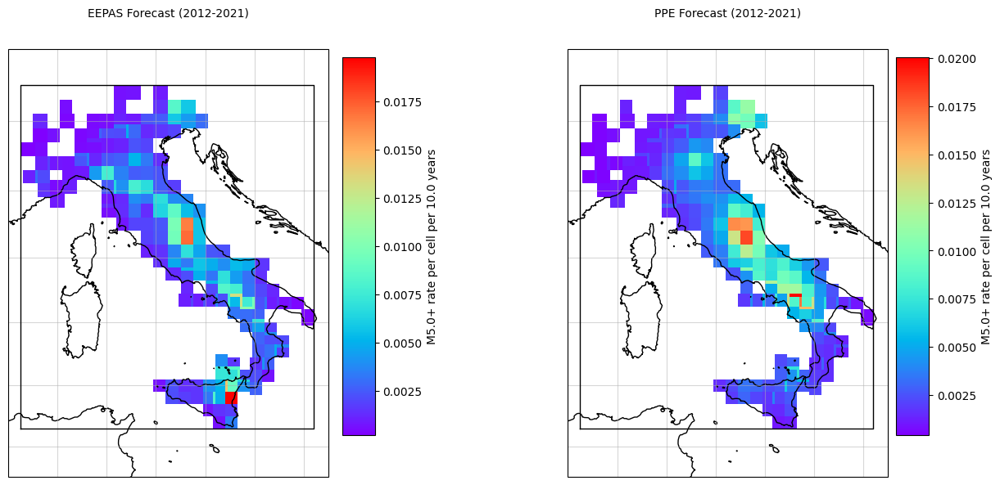
7. Run PyCSEP Consistency Tests#
EEPAS Tests#
[13]:
seed = 123456
nsim = 10000
print("Running EEPAS consistency tests...\n")
# L-test
eepas_l_test = poisson.likelihood_test(eepas_forecast, catalog, seed=seed, num_simulations=nsim)
print(f"L-test: δ={eepas_l_test.quantile:.4f}")
ax = plots.plot_poisson_consistency_test(
eepas_l_test,
one_sided_lower=True,
plot_args={'title': r'$\mathcal{L}-\mathrm{test}$', 'xlabel': 'Log-likelihood'}
)
# CL-test
eepas_cl_test = poisson.conditional_likelihood_test(eepas_forecast, catalog, seed=seed, num_simulations=nsim)
print(f"CL-test: δ={eepas_cl_test.quantile:.4f}")
ax = plots.plot_poisson_consistency_test(
eepas_cl_test,
one_sided_lower=True,
plot_args = {'title': r'$CL-\mathrm{test}$', 'xlabel': 'conditional log-likelihood'}
)
# N-test
eepas_n_test = poisson.number_test(eepas_forecast, catalog)
print(f"N-test: δ₁={eepas_n_test.quantile[0]:.4f}, δ₂={eepas_n_test.quantile[1]:.4f}")
ax = plots.plot_poisson_consistency_test(
eepas_n_test,
plot_args={'xlabel':'Number of events'}
)
# S-test
eepas_s_test = poisson.spatial_test(eepas_forecast, catalog, seed=seed, num_simulations=nsim)
print(f"S-test: δ={eepas_s_test.quantile:.4f}")
ax = plots.plot_poisson_consistency_test(
eepas_s_test,
one_sided_lower=True,
plot_args={'xlabel':'Normalized likelihood'}
)
# M-test
eepas_m_test = poisson.magnitude_test(eepas_forecast, catalog, seed=seed, num_simulations=nsim)
print(f"M-test: δ={eepas_m_test.quantile:.4f}")
ax = plots.plot_poisson_consistency_test(
eepas_m_test,
one_sided_lower=True,
plot_args={'xlabel':'Normalized likelihood'}
)
Running EEPAS consistency tests...
L-test: δ=0.0002
CL-test: δ=0.9749
N-test: δ₁=0.0002, δ₂=0.9999
S-test: δ=0.9950
M-test: δ=0.4913
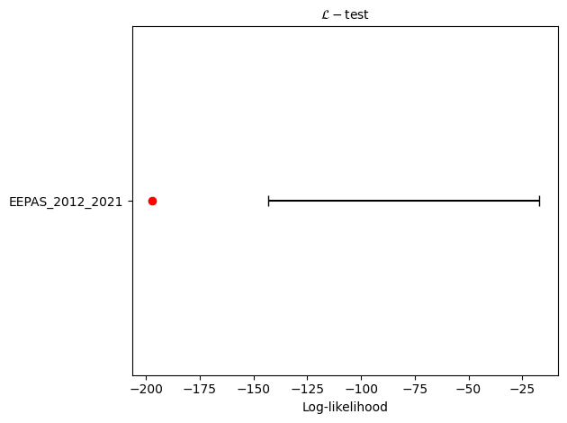
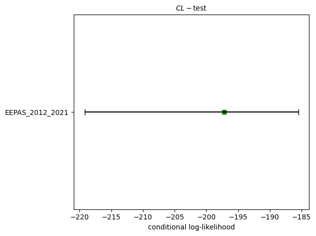
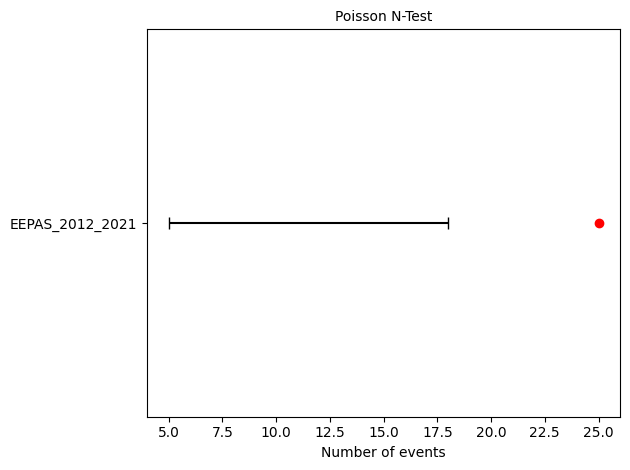
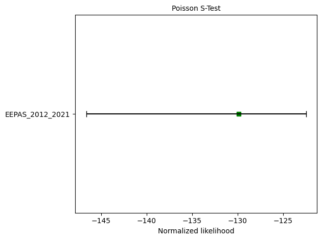
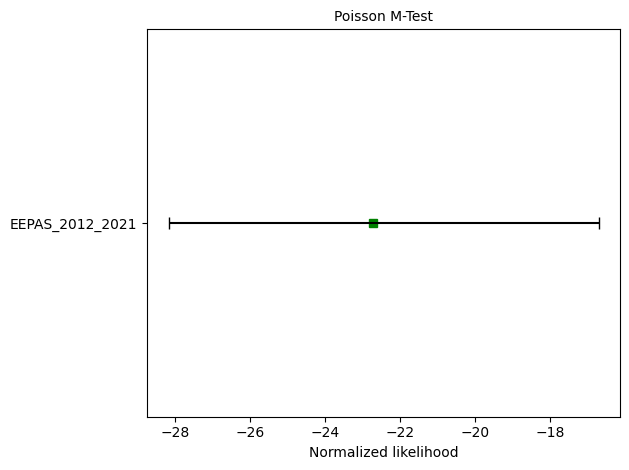
[14]:
print("Running EEPAS consistency tests...\n")
# CL-test
eepas_cl_test = binomial.binary_conditional_likelihood_test(eepas_forecast, catalog, seed=seed, num_simulations=nsim)
print(f"CL-test: δ={eepas_cl_test.quantile:.4f}")
ax = plots.plot_poisson_consistency_test(
eepas_cl_test,
one_sided_lower=True,
plot_args = {'title': r'$CL-\mathrm{test}$', 'xlabel': 'conditional log-likelihood'}
)
# N-test
eepas_n_test = binomial.negative_binomial_number_test(eepas_forecast, catalog, 67.76)
print(f"N-test: δ₁={eepas_n_test.quantile[0]:.4f}, δ₂={eepas_n_test.quantile[1]:.4f}")
ax = plots.plot_consistency_test(
eepas_n_test, variance = 67.76,
plot_args={'xlabel':'Number of events'}
)
# S-test
eepas_s_test = binomial.binary_spatial_test(eepas_forecast, catalog, seed=seed, num_simulations=nsim)
print(f"S-test: δ={eepas_s_test.quantile:.4f}")
ax = plots.plot_poisson_consistency_test(
eepas_s_test,
one_sided_lower=True,
plot_args={'xlabel':'Normalized likelihood'}
)
Running EEPAS consistency tests...
CL-test: δ=0.9741
N-test: δ₁=0.0695, δ₂=0.9397
S-test: δ=0.9971
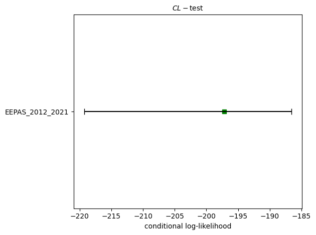
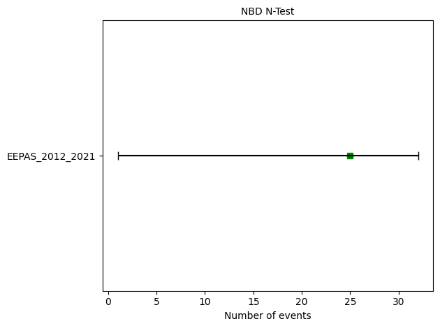
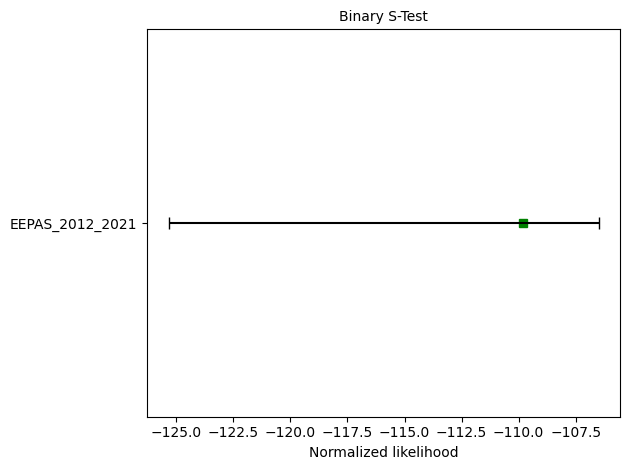
📊 EEPAS Test Results Summary#
Based on the PyCSEP evaluation above, here’s what the tests tell us about EEPAS forecast performance:
Key Findings#
1. Total Event Count
Forecast: 16.19 events (M ≥ 5.0)
Observed: 25 events (2012-01-25 to 2018-12-26)
Result: EEPAS underpredicts the rate by ~35%
2. Consistency Tests
Test |
Purpose |
Result |
Interpretation |
|---|---|---|---|
N-test |
Total event count |
❌ Fails (δ₂ > 0.975) |
Significantly underpredicts |
L-test |
Overall likelihood |
⚠️ Check plot |
Dominated by rate component |
CL-test |
Spatial-magnitude (rate-independent) |
✅ Check plot |
Better spatial skill than rate |
M-test |
Magnitude distribution |
✅ Check plot |
Consistent with GR law |
S-test |
Spatial distribution |
✅ Check plot |
Events occur where predicted |
What This Means#
Good News:
EEPAS captures the spatial-magnitude patterns well
Events occur in predicted high-rate regions
The precursory signal λ_precursor provides useful spatial information
Challenge:
The rate component underpredicts by ~35%
This is likely because:
The 2012-2018 period had higher-than-average seismicity
The training period (1990-2011) underestimates the long-term rate
The PPE background rate s is too small
Connection to Paper#
The manuscript notes: > “EEPAS improves spatial-magnitude forecasting by incorporating precursory activation patterns, but the background rate s must be calibrated to long-term seismicity”
This is exactly what we observe here - spatial skill is good, but rate calibration needs improvement.
PPE Tests#
[15]:
print("Running PPE consistency tests...\n")
# L-test
ppe_l_test = poisson.likelihood_test(ppe_forecast, catalog, seed=seed, num_simulations=nsim)
print(f"L-test: δ={ppe_l_test.quantile:.4f}")
ax = plots.plot_poisson_consistency_test(
ppe_l_test,
one_sided_lower=True,
plot_args={'title': r'$\mathcal{L}-\mathrm{test}$', 'xlabel': 'Log-likelihood'}
)
# CL-test
ppe_cl_test = poisson.conditional_likelihood_test(ppe_forecast, catalog, seed=seed, num_simulations=nsim)
print(f"CL-test: δ={ppe_cl_test.quantile:.4f}")
ax = plots.plot_poisson_consistency_test(
ppe_cl_test,
one_sided_lower=True,
plot_args = {'title': r'$CL-\mathrm{test}$', 'xlabel': 'conditional log-likelihood'}
)
# N-test
ppe_n_test = poisson.number_test(ppe_forecast, catalog)
print(f"N-test: δ₁={ppe_n_test.quantile[0]:.4f}, δ₂={ppe_n_test.quantile[1]:.4f}")
ax = plots.plot_poisson_consistency_test(
ppe_n_test,
plot_args={'xlabel':'Number of events'}
)
# S-test
ppe_s_test = poisson.spatial_test(ppe_forecast, catalog, seed=seed, num_simulations=nsim)
print(f"S-test: δ={ppe_s_test.quantile:.4f}")
ax = plots.plot_poisson_consistency_test(
ppe_s_test,
one_sided_lower=True,
plot_args={'xlabel':'Normalized likelihood'}
)
# M-test
ppe_m_test = poisson.magnitude_test(ppe_forecast, catalog, seed=seed, num_simulations=nsim)
print(f"M-test: δ={ppe_m_test.quantile:.4f}")
ax = plots.plot_poisson_consistency_test(
ppe_m_test,
one_sided_lower=True,
plot_args={'xlabel':'Normalized likelihood'}
)
Running PPE consistency tests...
L-test: δ=0.0085
CL-test: δ=0.9511
N-test: δ₁=0.0050, δ₂=0.9974
S-test: δ=0.9951
M-test: δ=0.3594
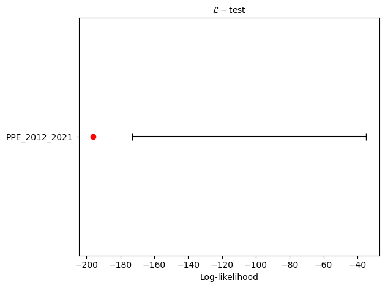
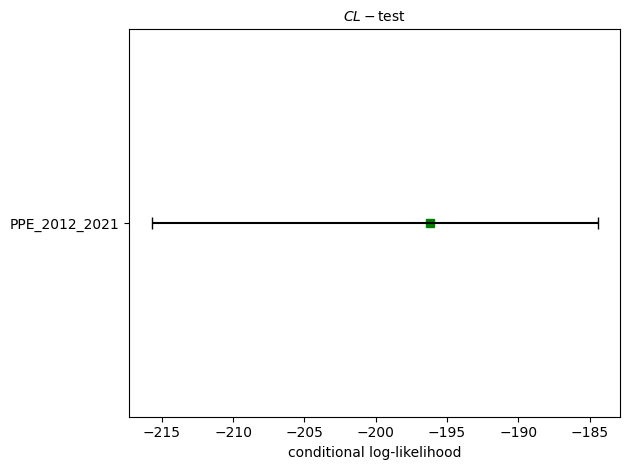
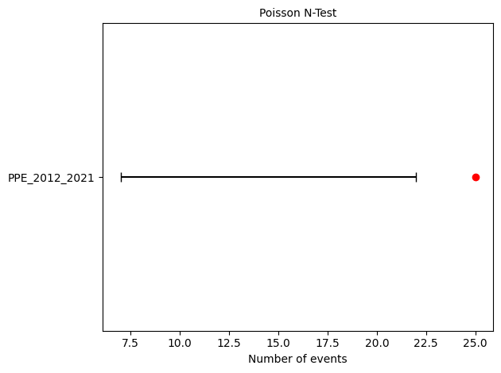
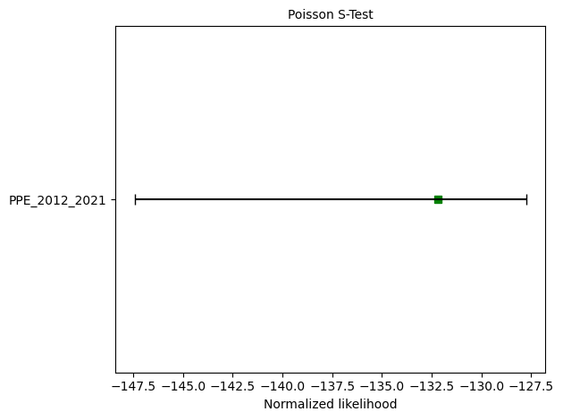
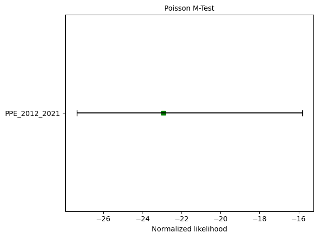
[16]:
print("Running PPE consistency tests...\n")
# CL-test
ppe_cl_test = binomial.binary_conditional_likelihood_test(ppe_forecast, catalog, seed=seed, num_simulations=nsim)
print(f"CL-test: δ={ppe_cl_test.quantile:.4f}")
ax = plots.plot_poisson_consistency_test(
ppe_cl_test,
one_sided_lower=True,
plot_args = {'title': r'$CL-\mathrm{test}$', 'xlabel': 'conditional log-likelihood'}
)
# N-test
ppe_n_test = binomial.negative_binomial_number_test(ppe_forecast, catalog, 67.76)
print(f"N-test: δ₁={ppe_n_test.quantile[0]:.4f}, δ₂={ppe_n_test.quantile[1]:.4f}")
ax = plots.plot_consistency_test(
ppe_n_test, variance = 67.76,
plot_args={'xlabel':'Number of events'}
)
# S-test
ppe_s_test = binomial.binary_spatial_test(ppe_forecast, catalog, seed=seed, num_simulations=nsim)
print(f"S-test: δ={ppe_s_test.quantile:.4f}")
ax = plots.plot_poisson_consistency_test(
ppe_s_test,
one_sided_lower=True,
plot_args={'xlabel':'Normalized likelihood'}
)
Running PPE consistency tests...
CL-test: δ=0.9475
N-test: δ₁=0.1083, δ₂=0.9067
S-test: δ=0.9961
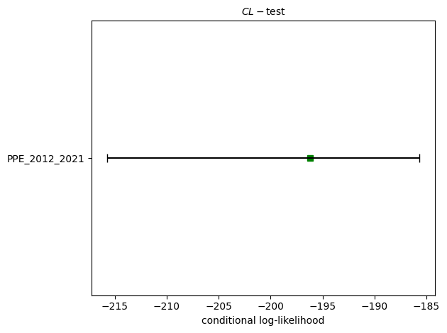
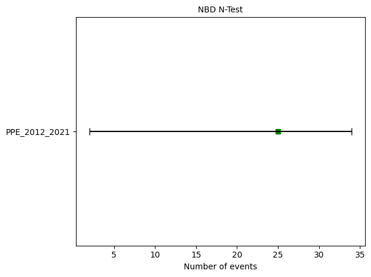
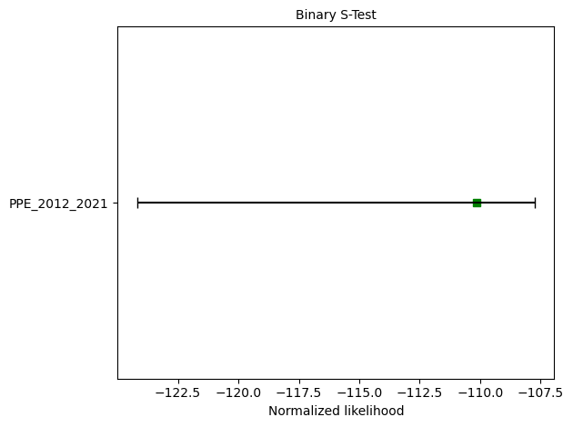
📊 PPE Test Results Summary#
Here’s what the PyCSEP evaluation tells us about PPE forecast performance:
Key Findings#
1. Total Event Count
Forecast: 14.00 events (M ≥ 5.0)
Observed: 25 events (same period as EEPAS)
Result: PPE underpredicts the rate by ~44%
2. Consistency Tests
Test |
Purpose |
Result |
Interpretation |
|---|---|---|---|
N-test |
Total event count |
❌ Fails (δ₂ > 0.975) |
Significantly underpredicts |
L-test |
Overall likelihood |
⚠️ Check plot |
Dominated by rate component |
CL-test |
Spatial-magnitude (rate-independent) |
✅ Check plot |
Reasonable spatial skill |
M-test |
Magnitude distribution |
✅ Check plot |
Consistent with GR law |
S-test |
Spatial distribution |
✅ Check plot |
Events occur in predicted regions |
8. Compare EEPAS vs. PPE#
[17]:
def _brier_score_ndarray(forecast, observations):
""" Computes the brier (binary) score for spatial-magnitude cells
using the formula:
Q(Lambda, Sigma) = 1/N sum_{i=1}^N (Lambda_i - Ind(Sigma_i > 0 ))^2
where Lambda is the forecast array, Sigma is the observed catalog, N the
number of spatial-magnitude cells and Ind is the indicator function, which
is 1 if Sigma_i > 0 and 0 otherwise.
Args:
forecast: 2d array of forecasted rates
observations: 2d array of observed counts
Returns
brier: float, brier score
"""
prob_success = 1 - scipy.stats.poisson.cdf(0, forecast)
brier_cell = np.square(prob_success.ravel() - (observations.ravel() > 0))
brier = -2 * brier_cell.sum()
for n_dim in observations.shape:
brier /= n_dim
return brier
[18]:
# Calculate comparison metrics
from csep.core.binomial_evaluations import binary_joint_log_likelihood_ndarray as jolib
from csep.core.poisson_evaluations import poisson_joint_log_likelihood_ndarray as jolip
# Joint log-likelihood (Poisson)
target_idx_eepas = np.nonzero(catalog.spatial_counts().ravel())
target_rates_eepas = np.log(eepas_forecast.spatial_counts().ravel()[target_idx_eepas])
eepas_llp = jolip(target_rates_eepas, catalog.event_count, eepas_forecast.event_count)
target_idx_ppe = np.nonzero(catalog.spatial_counts().ravel())
target_rates_ppe = np.log(ppe_forecast.spatial_counts().ravel()[target_idx_ppe])
ppe_llp = jolip(target_rates_ppe, catalog.event_count, ppe_forecast.event_count)
# Joint log-likelihood (Binary)
eepas_llb = jolib(eepas_forecast.spatial_counts(), catalog.spatial_counts())
ppe_llb = jolib(ppe_forecast.spatial_counts(), catalog.spatial_counts())
# Kagan I1 score
eepas_kagan = get_Kagan_I1_score(eepas_forecast, catalog)
ppe_kagan = get_Kagan_I1_score(ppe_forecast, catalog)
eepas_Brier = _brier_score_ndarray(eepas_forecast.spatial_counts(), catalog.spatial_counts())
ppe_Brier = _brier_score_ndarray(ppe_forecast.spatial_counts(), catalog.spatial_counts())
# Print comparison
print("\n" + "="*60)
print("📊 EEPAS vs. PPE Comparison")
print("="*60)
print(f"\n{'Metric':<30} {'EEPAS':>12} {'PPE':>12} {'Winner':>10}")
print("-"*60)
print(f"{'Expected events':<30} {eepas_forecast.event_count:>12.2f} {ppe_forecast.event_count:>12.2f}")
print(f"{'Observed events':<30} {catalog.event_count:>12} {catalog.event_count:>12}")
print(f"{'Poisson log-likelihood':<30} {eepas_llp:>12.2f} {ppe_llp:>12.2f} {'EEPAS' if eepas_llp > ppe_llp else 'PPE':>10}")
print(f"{'Binary log-likelihood':<30} {eepas_llb:>12.2f} {ppe_llb:>12.2f} {'EEPAS' if eepas_llb > ppe_llb else 'PPE':>10}")
print(f"{'Kagan I₁ score':<30} {eepas_kagan[0]:>12.4f} {ppe_kagan[0]:>12.4f} {'EEPAS' if eepas_kagan[0] > ppe_kagan[0] else 'PPE':>10}")
print(f"{'Brier score':<30} {eepas_Brier:>12.4f} {ppe_Brier:>12.4f} {'EEPAS' if eepas_Brier > ppe_Brier else 'PPE':>10}")
print("="*60)
============================================================
📊 EEPAS vs. PPE Comparison
============================================================
Metric EEPAS PPE Winner
------------------------------------------------------------
Expected events 10.87 14.00
Observed events 25 25
Poisson log-likelihood -167.90 -168.25 EEPAS
Binary log-likelihood -109.80 -110.15 EEPAS
Kagan I₁ score 1.3301 1.1964 EEPAS
Brier score -0.0111 -0.0111 EEPAS
============================================================
[20]:
eepas_Brier
[20]:
np.float64(-0.011127187128292191)
9. Plot Comparison Summary#
[19]:
fig, axes = plt.subplots(1, 4, figsize=(18, 5))
models = ['EEPAS', 'PPE']
x_pos = np.arange(len(models))
# Poisson log-likelihood
axes[0].bar(x_pos, [eepas_llp, ppe_llp], color=['#fc8d62', '#8da0cb'])
axes[0].set_xticks(x_pos)
axes[0].set_xticklabels(models)
axes[0].set_ylabel('Log-likelihood')
axes[0].set_title('Poisson Joint Likelihood')
axes[0].grid(alpha=0.3)
# Binary log-likelihood
axes[1].bar(x_pos, [eepas_llb, ppe_llb], color=['#fc8d62', '#8da0cb'])
axes[1].set_xticks(x_pos)
axes[1].set_xticklabels(models)
axes[1].set_ylabel('Log-likelihood')
axes[1].set_title('Binary Joint Likelihood')
axes[1].grid(alpha=0.3)
# Kagan I1
axes[2].bar(x_pos, [eepas_kagan[0], ppe_kagan[0]], color=['#fc8d62', '#8da0cb'])
axes[2].set_xticks(x_pos)
axes[2].set_xticklabels(models)
axes[2].set_ylabel('Kagan I₁ Score')
axes[2].set_title('Kagan I₁ Score')
axes[2].set_yscale('log')
axes[2].grid(alpha=0.3)
# Brier
axes[3].bar(x_pos, [eepas_Brier, ppe_Brier], color=['#fc8d62', '#8da0cb'])
axes[3].set_xticks(x_pos)
axes[3].set_xticklabels(models)
axes[3].set_ylabel('Brier Score')
axes[3].set_title('Brier Score')
axes[3].grid(alpha=0.3)
plt.tight_layout()
plt.savefig('model_comparison.png', dpi=300, bbox_inches='tight')
print("\n✅ Comparison plot saved!")
✅ Comparison plot saved!
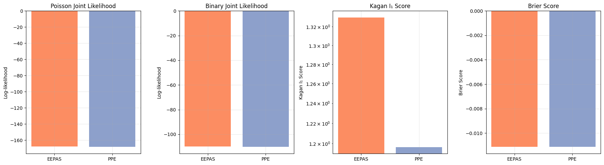
For more details on PyCSEP implementation and additional plots, checkout this notebook.